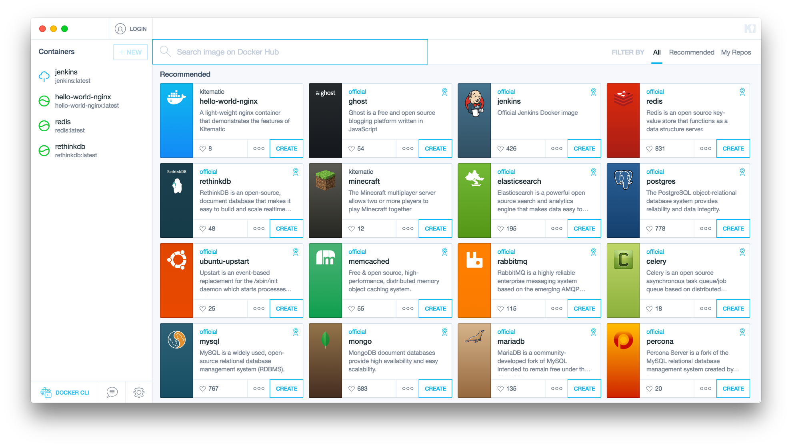

Установка Kitematic в Linux

Что такое Kitematic
Kitematic — инструмент, предоставляющий графический интерфейс для работы с контейнерами docker. Если кратко — позволяет разворачивать контейнеры в несколько кликов, интегрируется с Docker Hub, позволяет видеть актуальные логи запущенного процесса и производить базовую настройку в GUI.
Конечно, консоль никто не отменял, но для базовых вещей вполне подходит. К тому же удобно использовать этот инструмент для тестирования разных технологий и сервисов. Захотел посмотреть блоговую платформу Ghost — развернул контейнер, не понравилась — удалил. На всё про всё уйдёт десять минут.
Установка в Linux
Пользователи Linux как обычно, страдают — поддерживается только Mac и Windows, однако недавно была реализована установка для linux в ручном режиме. Я буду приводить инструкции для Debian / Ubuntu, но в ArchLinux, вроде, тоже работает.
Для параноиков: обратите внимание, что в инструкциях ниже предлагается производить установку посредством выполнения скриптов из (относительно) не проверенных источников. Рекомендую (на всякий случай) проверить что там внутри.
Установка зависимостей Kitematic
Ставим системные пакеты в терминале под рутом:
$ apt-get install build-essential libcanberra-gtk-module
Устанавливаем nodejs . На данный момент поддерживается версия 4.2.2. Разумно для этого использовать nvm:
$ curl -o- https://raw.githubusercontent.com/creationix/nvm/v0.30.1/install.sh | bash
$ . ~/.nvm/nvm.sh
Для работы nvm, необходимо добавить следующие строки в ~/.profile или ~/.bashrc:
export NVM_DIR="$HOME/.nvm" [ -s "$NVM_DIR/nvm.sh" ] && . "$NVM_DIR/nvm.sh" # This loads nvm
Теперь можно поставить nodejs необходимой версии и сделать её интерпретатором по-умолчанию:
nvm install 4.2.2 nvm alias default v4.2.2
Чтобы проверить, всё-ли вы сделали правильно, лучше выполнить команду node -v и удостовериться, что версия 4.2.2.
Установка Docker
Если Docker уже стоит - прекрасно, если нет, то ставим его:
$ curl -sSL https://get.docker.com/ | sudo sh $ sudo gpasswd -a ${USER} docker $ sudo service docker restart $ newgrp docker
Установка Kinematic
$ cd ~/bin $ git clone https://github.com/docker/kitematic $ cd kitematic/ $ make $ npm start # запуск приложения
Команда make соберёт приложение. Для запуска можно использовать команду npm start, но я предпочёл создать скрипт для запуска:
$ cat ~/bin/kite #!/bin/bash bash -c 'cd /home/asyncee/bin/kitematic && npm start'
Комментарии
Comments powered by Disqus